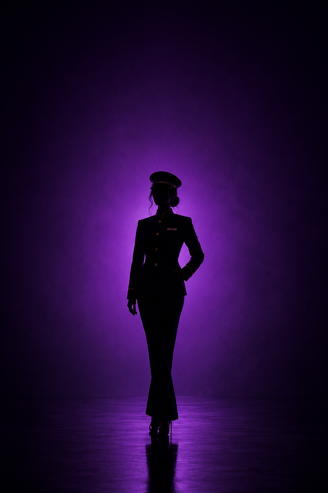

Runde 3
Täter finden
Die letzten Hinweise zusammenführen und dich selbst entlasten.

Deine Informationen
1. Der Adoptionsantrag wurde offiziell weit vor dem Todesfall abgelehnt. Julia kann das bestätigen.
2. Geheim: Du hast Alex und Krüger einmal dabei gesehen, wie sie Max Streiche gespielt haben. Befrage ihn dazu. (Bringe die Information erst zehn Minuten nach Rundenbeginn ein.)
3. Zwei Hinweise liegen jetzt auf dem Tisch: deine Stimmen um 22:00 Uhr aus Richtung Küche und Cloes Silhouette um 23:30 Uhr am Technikraum. Das sind zwei Phasen, oder?
Dein Verhalten
- Enthülle deine Beziehung zu Julia offen und frühzeitig in dieser Runde, falls sie nicht bereits bekannt ist.
- Verbinde die beiden oben genannten Zeitpunkte aktiv mit den anderen Informationen.
Mögliche Fragen
An Alex: „Welchen Sinn hatten die vielen Streiche an Max?“
An Krüger: „Arbeiten Sie auf irgendeine Weise mit Alex hier zusammen?“